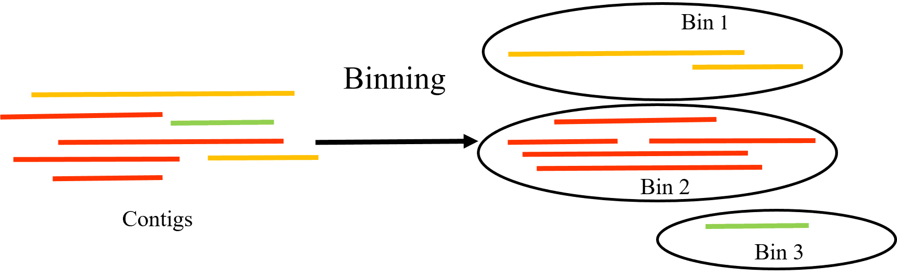

4 Binning
4.1 Contexto
O passo de binning se trata do processo de agrupar sequências montadas da metagenômica (contigs/scaffolds) que provavelmente pertencem ao mesmo organismo.

4.2 Arquivos e ambiente conda necessários
Desative o ambiente conda “metagenomicsTraining’
conda deactivateAtive o ambiente conda “binning”
conda activate binningArquivos necessários:
final.contigs.fa
SRR579292_1.fastq
SRR579292_2.fastqMude o diretório atual para "Pipeline/data/megahit/SRR579292"
4.3 Preparativos para a execução dos softwares de binning
Faça a indexação dos contigs
bowtie2-build final.contigs.fa contigs_dbMapeie as reads:
bowtie2 -x contigs_db -1 ../../SRR579292_1.fastq -2 ../../SRR579292_2.fastq -p 12 | samtools view -bS - | samtools sort -@ 12 -o SRR579292_sorted.bamFaça a indexação do arquivo BAM
samtools index SRR579292_sorted.bamGere a profundidade
jgi_summarize_bam_contig_depths --outputDepth depth.txt SRR579292_sorted.bam4.4 Executando o Metabat2
metabat2 -i final.contigs.fa -a depth.txt -o ../../../bins/metabat/bin -t 12 --minContig 15004.5 Executando o Maxbin2
run_MaxBin.pl -contig final.contigs.fa -abund depth.txt -out ../../../bins/maxbin/maxbin -thread 124.6 Arquivos e ambiente conda necessários para executar o CONCOCT
Desative o ambiente conda “binning’
conda deactivateAtive o ambiente conda “concoct_env”
conda activate concoct_env4.7 Fragmentar contigs
O CONCOCT trabalha melhor quebrando contigs grandes.
cut_up_fasta.py final.contigs.fa -c 10000 -o 0 -m -b ../../../bins/concoct/contigs_10K.bed > ../../../bins/concoct/contigs_10K.faGere a tabela de cobertura
concoct_coverage_table.py ../../../bins/concoct/contigs_10K.bed SRR579292_sorted.bam > ../../../bins/concoct/coverage_table.tsvExecute o CONCOCT
concoct --composition_file ../../../bins/concoct/concoct_contigs_10K.fa --coverage_file ../../../bins/concoct/coverage_table.tsv -b ../../../bins/concoct/Mescle clusters fragmentados
merge_cutup_clustering.py ../../../bins/concoct/clustering_gt1000.csv > ../../../bins/concoct/clustering_merged.csv4.8 Preparar para DASTool
Desative o ambiente conda “concoct_env’
conda deactivateAtive o ambiente conda “binning”
conda activate binning4.9 Converter MetaBAT2
Fasta_to_Contig2Bin.sh -i ../../../bins/metabat/ -e fa > ../../../bins/metabat/metabat_scaffolds2bin.tsv4.10 Converter MaxBin2
Fasta_to_Contig2Bin.sh -i ../../../bins/maxbin/ -e fasta > ../../../bins/maxbin/maxbin_scaffolds2bin.tsv4.11 Alteração do formato dos arquivos de bins do CONCOCT
O DASTool espera separação de elementos por TAB (, mas o CONCOCT gera CSV com vírgula. O DASTool geralmente não interpreta headers. Remova a header do seu arquivo tsv e substitua o uso de vírgula por tab.
cat ../../../bins/concoct/clustering_merged.csv | tr ',' '\t' > ../../../bins/concoct/clustering_merged.tsv
tail -n +2 ../../../bins/concoct/clustering_merged.tsv > ../../../bins/concoct/clustering_merged_noheader.tsv4.12 DASTool
DAS_Tool -i ../../../bins/metabat/metabat_scaffolds2bin.tsv,../../../bins/maxbin/maxbin_scaffolds2bin.tsv,../../../bins/concoct/clustering_merged_noheader.tsv -l metabat,maxbin,concoct -c final.contigs.fa -o ../../../dastool/dastool --search_engine diamond --threads 12 --write_bins